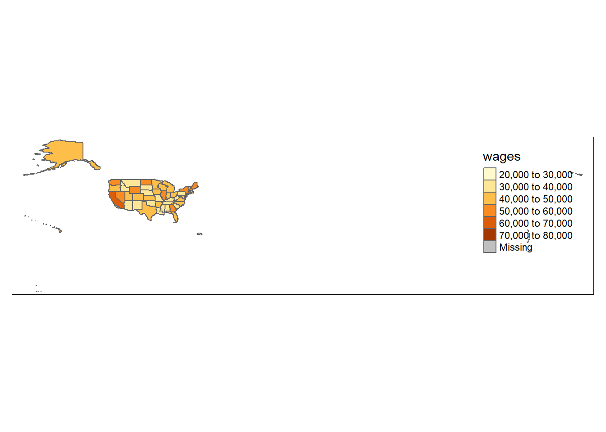
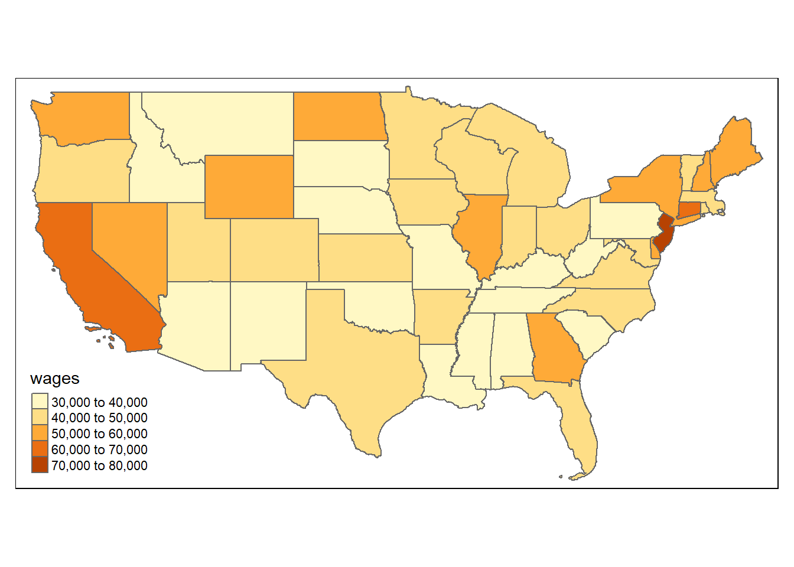
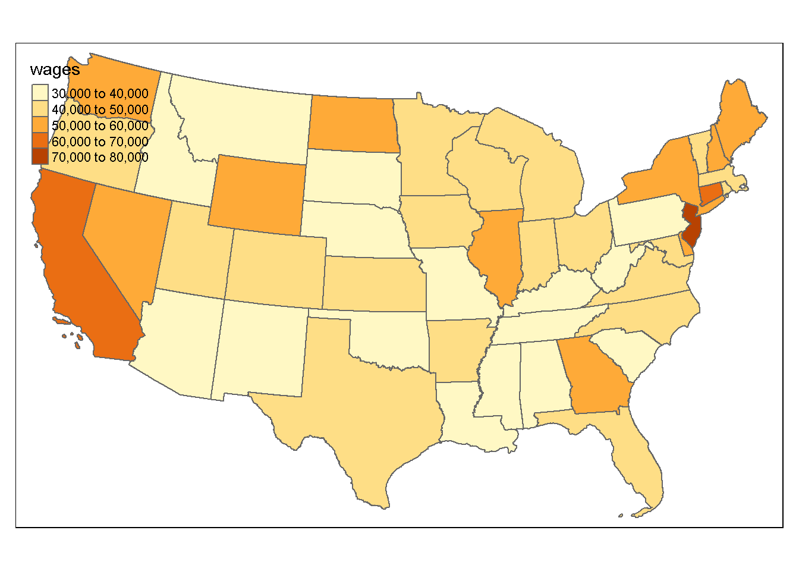
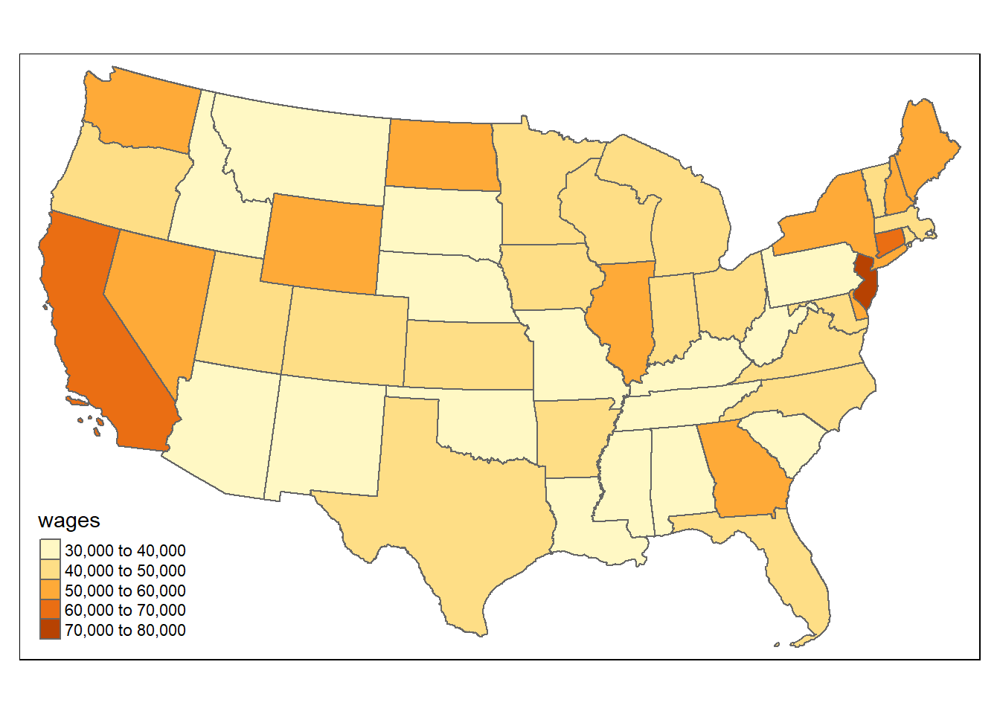
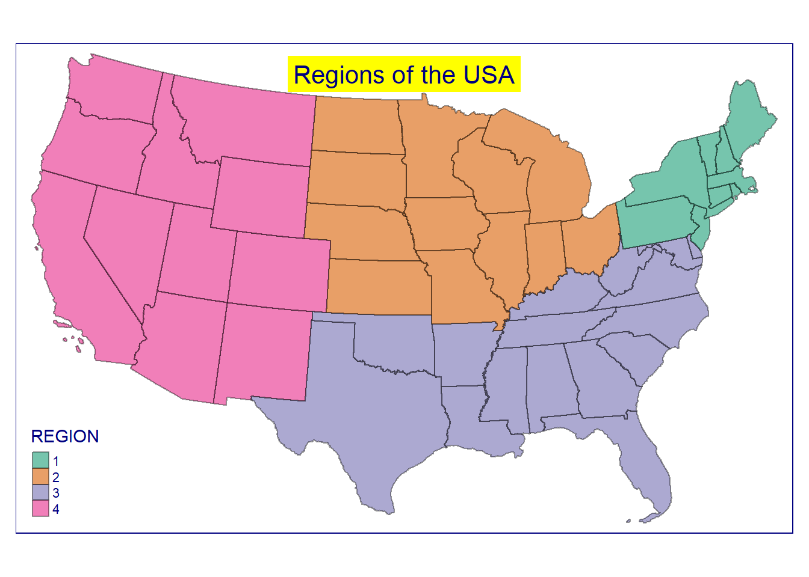
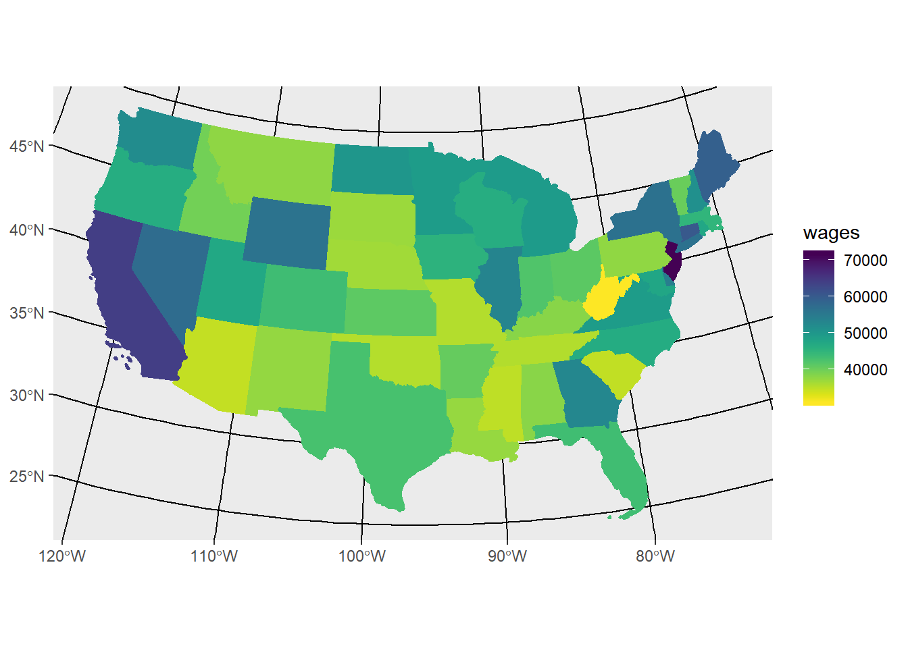

library(tidyverse) # Tidyverse for Tidy Data
library(readxl)
library(tmap) # Thematic Mapping
library(tmaptools)
library(tigris) # Get Census Geography Poloygons
library(sf)Using the tigris package, get Census Tiger shapefiles for census geographies. Tigris will return the shapefile in the sf, or simple features, format. (See also, more information on Shapefiles.)
us_geo <- tigris::states(class = "sf")
# us_geo_spdf <- states() # spdf uses @data slots -- old schoolThe advantage of managing your spatial data as “Simple Features” (i.e. sf) over sp is that sf data can easily be viewed and manipulated as a rectangular data frame, before visualizing. sp is the predecessory to sf, but uses the old school @data slots method. If you’re used to this it can be a highly functional data structure. But if you’re inclined toward the tidyverse method, you’ll see your data in a more familiar and easy-to-view format. Below are two methods of viewing the stucture of the downloaded shapefiles.
class(us_geo)## [1] "sf" "data.frame"glimpse(us_geo)## Observations: 56
## Variables: 15
## $ REGION <chr> "3", "3", "2", "2", "3", "1", "4", "1", "3", "1", "1"...
## $ DIVISION <chr> "5", "5", "3", "4", "5", "1", "8", "1", "5", "1", "1"...
## $ STATEFP <chr> "54", "12", "17", "27", "24", "44", "16", "33", "37",...
## $ STATENS <chr> "01779805", "00294478", "01779784", "00662849", "0171...
## $ GEOID <chr> "54", "12", "17", "27", "24", "44", "16", "33", "37",...
## $ STUSPS <chr> "WV", "FL", "IL", "MN", "MD", "RI", "ID", "NH", "NC",...
## $ NAME <chr> "West Virginia", "Florida", "Illinois", "Minnesota", ...
## $ LSAD <chr> "00", "00", "00", "00", "00", "00", "00", "00", "00",...
## $ MTFCC <chr> "G4000", "G4000", "G4000", "G4000", "G4000", "G4000",...
## $ FUNCSTAT <chr> "A", "A", "A", "A", "A", "A", "A", "A", "A", "A", "A"...
## $ ALAND <dbl> 62265597146, 138924199212, 143788697679, 206232257655...
## $ AWATER <dbl> 489902816, 31386038155, 6206693598, 18929176411, 6983...
## $ INTPTLAT <chr> "+38.6472854", "+28.4574302", "+40.1028754", "+46.315...
## $ INTPTLON <chr> "-080.6183274", "-082.4091478", "-089.1526108", "-094...
## $ geometry <sf_geometry [degree]> MULTIPOLYGON (((-81.74725 3..., MULT...And as noted, here’s the data frame view. Notice the geometry (polygon shape) in the far-right column of the data frame.
as_tibble(us_geo)I’ve already downloaded and stored some data from the Bureau of Labor Statistics. Those data are stored in an excel file in the data directory of the repository: data/OES_Report.xlsx. The goal is to attach this data to the previously downloaded shapefiles.
But you may be interested in how I gathered the data. below are some summary notes documenting my steps of gathering the data from the Bureau of Labor Statistics.
https://data.bls.gov/oes/#/occGeo/One%20occupation%20for%20multiple%20geographical%20areas
One occupation for multiple geographical areas
Mental Health and Substance Abuse Social Workers
State
All States in this list
Annual Mean wage
Read the Data in with the RStudio “Import Dataset” wizard available in the Environment tab. This will generate the code below and ensure the import
Salary4Helpers <-
read_excel("data/OES_Report.xlsx",
col_types = c("text", "numeric"),
skip = 4)
Salary4HelpersBefore we join the BLS data to the shapefile we need to transform the structure of the downloaded BLS data
BlsWage_ToJoin <- Salary4Helpers %>%
rename(Area = "Area Name") %>%
rename(wages = "Annual mean wage(2)") %>%
mutate(State = gsub("\\(\\d{7}\\)", "", Area)) %>%
filter(wages != "NA_character_") %>%
select(State, wages)
#BlsWage_ToJoinUsing the append_data() function of the tmaptools package, append BLS data to the previously loaded shape object
HelperShapeObject <- append_data(us_geo, BlsWage_ToJoin,
key.shp = "NAME",
key.data = "State")## Under coverage: 3 out of 56 shape features did not get appended data. Run under_coverage() to get the corresponding feature id numbers and key values.as_tibble(HelperShapeObject)qtm(HelperShapeObject, fill = "wages")
Filter to only the contiguous 48 states + D.C.
contiguous_states <- HelperShapeObject %>%
filter(REGION != 9) %>%
filter(STUSPS != "AK") %>%
filter(STUSPS != "HI")tm_shape(contiguous_states) +
tm_polygons("wages", id = "Name")
Mark likes the USA_Contiguous_Albers_Equal_Area_Conic_USGS_version projection for the continental US. EPSG:5070
contiguous_states %>%
st_transform(5070) %>%
tm_shape() +
tm_polygons("wages", id = "Name")
tm_shape(contiguous_states, projection = 5070) +
tm_polygons("wages", id = "Name")
tmap syntax and functionstm_shape(contiguous_states, projection = 5070) +
tm_borders(col = "black", alpha = 0.4) +
tm_fill(col = "REGION", alpha = 0.6) +
tm_style_beaver(title = "Regions of the USA",
attr.color = "navy",
title.position = c("center", "top"),
title.bg.color = "yellow")
In this section we introduce making shapefiles with ggplot2. ggplot2 is one of the more popular and broadly distributed graphics packages used in the R community. As of this writing, there is a development version of ggplot2 that includes the geom_sf function demonstrated below. You may need to install the development version to run this code.
library(viridis)## Warning: package 'viridis' was built under R version 3.4.3## Loading required package: viridisLite## Warning: package 'viridisLite' was built under R version 3.4.3#devtools::install_github("tidyverse/ggplot2")
library(ggplot2) #-- version 2.2.1.90000
contiguous_states %>%
ggplot(aes(fill = wages, color = wages)) +
geom_sf() +
coord_sf(crs = 5070) +
scale_fill_viridis(option = "viridis", direction = -1) +
scale_color_viridis(option = "viridis", direction = -1)
This session inspired by https://www.computerworld.com/article/3175623/data-analytics/mapping-in-r-just-got-a-whole-lot-easier.html